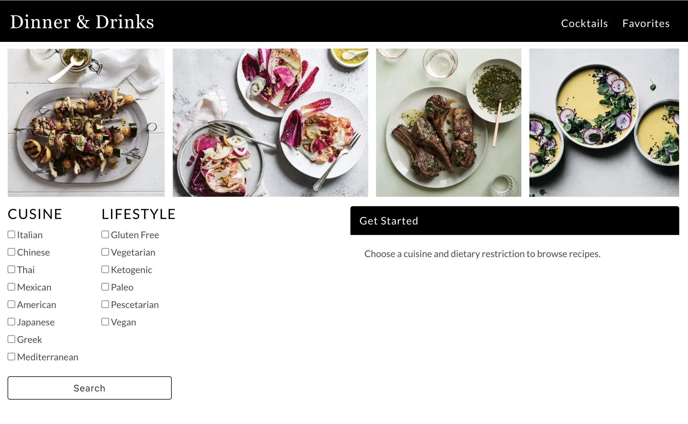
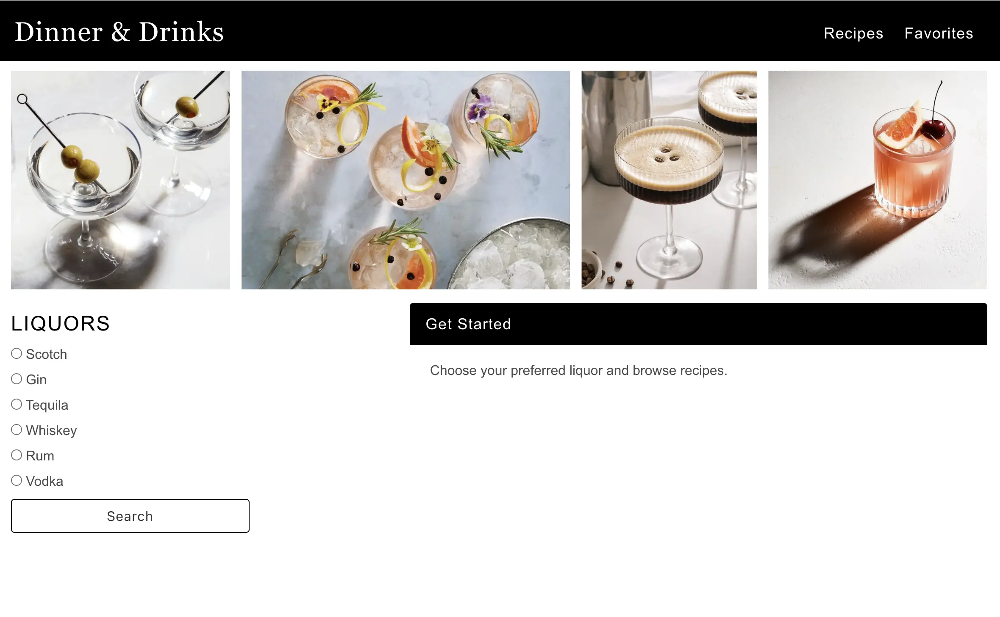
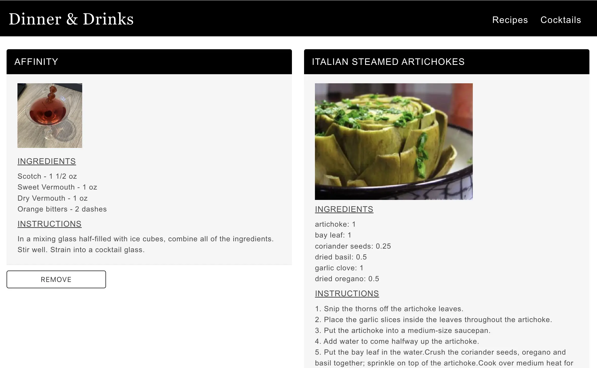

A recipe generator curated around user preference. Users can search recipes based on cuisine and dietary restrictions, as well cocktail recipes based on alcohol preference. Users have the ability to favorite recipes which are displayed on the users favorites page.
Front-end developer
UX/UI
Javascript
HTML
CSS
Spoonacular API
Cocktails DB API


